승강기기사 (2003-08-31 기출문제)
1과목: 승강기 개론
1. 조속기의 과속도스위치에 대한 설명으로 틀린 것은?
- 하강방향에서만 동작된다.
- 카의 속도가 정격속도의 1.3배를 초과하지 않는 범위내에서 동작된다.
- 정격속도가 45m/min인 경우에는 63m/min를 초과하지 않는 범위내에서 동작된다.
- 1차 동작스위치를 말한다.
(정답률: 62%)

2. 비상정지장치를 균형추에도 설치해야 되는 경우는?
- 카의 속도가 210m/min 이상인 경우
- 피트 깊이가 1800mm 이상인 경우
- 카의 속도가 300m/min 이상인 경우
- 승강로 피트 바닥밑에 통로가 설치된 경우
(정답률: 73%)
3. 승강기를 속도별로 분류할 때 잘못 분류된 것은?
- 저속승강기: 45m/min 이하
- 중속승강기: 50~120m/min
- 고속승강기: 120~240m/min
- 초고속승강기: 300m/min 이상
(정답률: 73%)
4. 엘리베이터의 속도가 60m/min 일 경우 지켜야 할 카 꼭대기 틈새(top clearance)는 몇m 이상이어야 하는가?
- 1.2
- 1.4
- 1.6
- 1.8
(정답률: 60%)
5. 로프식 엘리베이터에서 속도에 영향을 미치지 않는 것은?
- 감속기 기어의 감속비
- 권상 도르레의 직경
- 전동기의 용량
- 전동기의 회전수
(정답률: 67%)
6. 주로프에 접하는 부분의 길이가 그 주위 둘레의
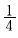
이하인 시브(sheave) 직경은 주로프 직경의 몇 배 이상으로 할 수 있는가?- 34
- 36
- 40
- 45
(정답률: 77%)
7. 승강기용 주로프의 특징을 설명한 것 중 틀린 것은?
- 파단강도가 일반 로프보다 크다.
- 반복적인 휨을 받는다.
- 강선속의 탄소량을 적게 한다.
- 심강은 소선의 방청 및 윤활작용을 한다.
(정답률: 38%)
8. 에스컬레이터의 안전장치가 아닌 것은?
- 전자브레이크 및 비상정지스위치
- 구동체인 안전장치 및 화이널 리미트스위치
- 스톱(stop)체인 안전장치 및 핸드레일 안전장치
- 스커드 가드 안전스위치 및 조속기 장치
(정답률: 44%)
9. 승강기에 사용되는 유도전동기의 용량이 15kW고, 전동기의 회전수가 1450rpm 이라면 이전동기의 토크는 몇 kg.m 인가?
- 7.4
- 10.1
- 15.4
- 20.2
(정답률: 52%)
10. 균형추 방식의 엘리베이터에 대한 설명 중 옳은 것은?
- 동일한 용량과 속도인 경우 권동식에 비하여 구동 전동기의 출력용량을 줄일 수있다.
- 무거운 균형추를 사용하므로 균형추를 사용하지 않는 경우보다 큰 출력의 전동기가 필요하다
- 승강행정이 클 경우에 적용하기 좋다.
- 균형추에 의하여 균형을 잡으므로 카가 미끄러질 염려는 없다.
(정답률: 75%)
11. 케이지실(카)에 사용할 수 없는 유리는?
- 망유리
- 강화유리
- 복층유리
- 접합유리
(정답률: 50%)
12. 직류엘리베이터의 속도제어방법이 아닌 것은?
- ARMATURE의 직렬저항제어
- ARMATURE의 직병렬저항제어
- SHUNT FIELD의 제어
- DYNAMIC BRAKE 제어
(정답률: 48%)
13. 엘리베이터 기계실의 바닥면부터 천장 또는 보의 하부까지의 수직거리는 몇m 이상으로 하여야 하는가?
- 2
- 2.2
- 2.4
- 2.5
(정답률: 75%)
14. 승강기의 적재 하중은 몇kg 단위로 표시하는가?
- 50
- 60
- 80
- 100
(정답률: 42%)
15. 승강장 출입구 바닥 앞부분과 카바닥 앞부분과의 최소 틈새 너비는 얼마인가?
- 3㎝이하
- 3.5㎝이하
- 4㎝이하
- 4.5㎝이하
(정답률: 12%)
16. 파이프가 파손되었을때 자동적으로 닫아 카가 급격히 떨어지는 것을 방지하기 위한 밸브는?
- 럽쳐 밸브
- 스톱 밸브
- 안전 밸브
- 체크 밸브
(정답률: 20%)
17. 비상정지장치의 흡수에너지와 관계가 없는 것은?
- 비상정지장치의 적용 중량
- 적용 조속기의 동작속도
- 중력 가속도
- 감속시간
(정답률: 46%)
18. 간접식 유압 엘리베이터의 로프가 늘어나면 발생하는 현상은?
- 로프가 늘어나서 카 바닥이 건물측 바닥을 못 미쳐 정지한다
- 펌프가 과열된다.
- 오일이 과열된다.
- 카가 상승할 때 플랜저의 이동거리가 늘어난다.
(정답률: 60%)
19. 비상용 엘리베이터의 운행속도는 몇m/min 이상으로 하여야 하는가?
- 45
- 60
- 90
- 120
(정답률: 82%)
20. 도어를 반전시키는 문닫힘 안전장치의 종류가 아닌것은?
- 세이프티 슈
- 광전 장치
- 초음파 장치
- 도어 클로져
(정답률: 60%)
2과목: 승강기 설계
21. 비상용 엘리베이터를 설치해야 하는 경우의 건축물은?
- 높이 31m를 넘는 각층의 바닥면적의 합계가 1000m2인 건축물
- 높이 31m를 넘는 각층을 거실외의 용도로 사용하는 건축물
- 16층 미만의 공동주택
- 높이 31m를 넘으나 인명구조와 소방활동에 지장이 없는 건축물
(정답률: 65%)
22. 그림에서 W의 값은?
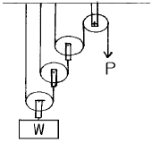
- W=2P
- W=3P
- W=4P
- W=8P
(정답률: 49%)
23. 권상기의 도르래와 로프에 관하여 맞는 것은?
- 권부각이 클수록 미끄러지기 쉽다.
- 카측과 균형추측의 로프에 걸리는 중량비가 작을수록 미끄러지기 쉽다.
- 제반 조건들이 동일한 경우 V홈보다 언더컷홈의 도르래에서의 로프 마모가 크다.
- 미끄러짐이 발생하는 한계의 카측과 균형추측의 장력비의 값을 트랙션 능력이라 한다.
(정답률: 53%)
24. 적재하중은 1000kg(P15인승)이고, 속도는 90m/min, 전동기 효율이 55%, 기타 종합 효율이50%, 오버 밸런스율이 45% 일 경우 전동기의 용량은 약 몇kW 인가?
- 16
- 22
- 29
- 35
(정답률: 38%)
25. 자동 도어에 있어서 도어에 이물질이 끼거나 도어 측면에 충돌 하였을 때 보호하는 장치가 아닌 것은?
- 초음파 장치
- 광전장치
- 도어머신
- 세이프티 슈
(정답률: 71%)
26. 에스컬레이터의 배치에 대한 설명으로 옳은 것은?
- 복열 승계형은 바닥면적을 좁게 요하는 장점이 있다.
- 단열 승계형은 위층으로 고객을 유도하기 쉬운 장점이 있다.
- 교차 승계형은 쇼핑객의 시야가 넓은 장점이 있다.
- 단열 겹침형은 바닥에서의 교통이 연속되는 장점이 있다.
(정답률: 48%)
27. 조명전원에 사용되는 인입선의 굵기에 대한 설명으로 옳은 것은?
- 전선로의 길이에 비례한다.
- 허용전압강하율에 비례한다.
- 전원을 공용하는 병렬설치 대수에 반비례한다.
- 조명용 스위치의 크기에 비례한다.
(정답률: 58%)
28. 기계실의 구조에 대한 설명 중 틀린 것은?
- 기계실의 바닥면적은 원칙적으로 승강로 수평투영면적의 2배 이상으로 한다.
- 기계실 바닥면부터 천장 또는 보의 하부까지의 수직거리는 2m 이상으로 한다.
- 기계실의 실온은 유지관리에 지장이 없도록 원칙적으로 40℃이하를 유지하여야 한다.
- 기계실 출입문의 폭은 0.6m 이상, 높이는 1.8m 이상으로한다
(정답률: 59%)
29. 동기 출력이 11kW, 전부하 회전수가 2500rpm 일 때 전부하 토크는 몇 kg.m 인가?
- 4.3
- 43
- 430
- 4300
(정답률: 48%)
30. 유압 엘리베이터의 스톱밸브에 대한 설명으로 옳은 것은?
- 한쪽 방향으로만 흐름을 허용하는 밸브이다.
- 어느 쪽이든 흐름을 막아주는 밸브이다.
- 일정압력 이상이 되면 흐름을 막아주는 밸브이다.
- 일정한 유량만을 흐르게 해주는 밸브이다.
(정답률: 57%)
31. 직류전동기의 일반적인 제어법이 아닌 것은?
- 저항제어법
- 전압제어법
- 주파수제어법
- 계자제어법
(정답률: 53%)
32. 비상정지장치의 성능 시험과 관계가 없는 것은?
- 적용 중량
- 가이드 레일의 규격
- 감속도
- 정지 거리
(정답률: 59%)
33. 비상호출 운전시의 상황에 대한 설명으로 옳은 것은?
- 문닫힘 안전장치의 기능은 무효화 되고, 과부하감지 장치의 기능도 무효화 된다.
- 문닫힘 안전장치의 기능은 무효화 되고, 과부하감지 장치의 기능은 유효화 된다.
- 문닫힘 안전장치의 기능은 유효화 되고, 과부하감지 장치의 기능도 유효화 된다.
- 문닫힘 안전장치의 기능은 유효화 되고, 과부하감지 장치의 기능은 무효화 된다.
(정답률: 49%)
34. 가이드 레일의 설계에 관하여 틀린 것은?
- 수평 진동력은 카나 균형추 중량의 최소 0.6배이다.
- 레일 브라켓의 간격은 레일의 치수를 고려하여 결정 한다.
- 지게차로 하중을 적재하는 경우에는 레일 설계에 고려하여야 한다.
- 즉시작동형 비상정지장치가 점차작동형 비상정지장치보다 좌굴을 일으키기 쉽다.
(정답률: 55%)
35. 승강기 카와 균형추 하부에는 반드시 완충기를 설치하도록 하고있다. 용수철 완충기는 정격속도가 몇 m/min 이하인 경우에 설치하여야 되는가?
- 60
- 70
- 90
- 1⑤
(정답률: 74%)
36. 무부하 전압 220V, 정격전압 200V인 발전기의 전압변동률은 몇% 인가?
- 6
- 8
- 10
- 12
(정답률: 65%)
37. 엘리베이터용 동력 전원이 300V를 초과 할 경우 에 필요한 접지공사의 종류 및 적용되는 접지 저항값을 바르게 나타낸 것은?
- 제3종접지공사, 100Ω이하
- 제3종접지공사, 10Ω이하
- 특별제3종접지공사, 100Ω이하
- 특별제3종접지공사, 10Ω이하
(정답률: 49%)
38. 속도 45m/min 이하의 로프식 엘리베이터를 설치할 경우 피트의 최소 깊이는 몇m인가?
- 0.8
- 0.9
- 1.0
- 1.2
(정답률: 71%)
39. 가이드 레일(Guide Rail)과 그 부재에 대한 설명 중 옳지 않은 것은?
- 레일 클립(Rail Clip), 피시 플레이트(PishPlate),조임용 재료 등은 주철로 제작되어야 하고 충격을 충분히 견디는 강도를 유지하여야 한다.
- 콘크리트벽의 두께가 120mm 이상일 경우에만 앵커볼트의 사용이 가능하다.
- 레일 브래킷 (Rail Bracket)에 가공되는 볼트조립용 홀 (Hole)의 지름은 볼트의 지름보다1.6mm 이상 커서는 안된다.
- 레일 브래킷(Rail Bracket)을앵커볼트와 너트로 조였을 경우 너트의 머리로부터 볼트 나사산이 2개 이상 돌출되도록 한다.
(정답률: 43%)
40. 점차작동형 비상정지장치로 플렉시블 웨지클램프(Flexible Wedge Clamp)형이 현재 많이 사용되는 이유가 아닌 것은?
- 구조가 간단하다.
- 작동후 복구가 용이하다.
- 작동되는 힘이 일정하다.
- 공간을 작게 차지한다.
(정답률: 56%)
3과목: 일반기계공학
41. 동일재료로 단면의 크기(치수)가 일정한 보에 대한 설명으로 틀린 것은?
- 단면의 크기가 일정하여도 탄성계수는 변화 한다.
- 단면의 크기가 일정하면 단면 2차모멘트(I)는 변화하지 아니 한다.
- 굽힘 모멘트가 클수록 곡률 반지름(ρ)은 작아 진다.
- 보의 굽힘응력은 보에 작용하는 굽힘 모멘트에 비례한다.
(정답률: 54%)
42. 공동현상(cavitation) 방지책이 잘못 설명한 것은?
- 펌프의 설치 위치를 낮춘다.
- 펌프의 회전수를 높게 한다.
- 단흡입을 양 흡입으로 바꾼다.
- 손실 수두를 작게 한다.
(정답률: 79%)
43. 숫돌차의 바깥 지름이 300 ㎜, 회전수 1500rpm, 공작물의 원주속도 20 m/min 일 때 연삭속도는 약m/min 인가? (단, 공작물의 회전 방향은 연삭숫돌과 같은 방향이다.)
- 1394
- 1414
- 1434
- 1533
(정답률: 41%)
44. 옥상 물탱크의 자유표면에서 수면 아래의 깊이가 20m인 지점에 있는 작업장 급수밸브의 수압 몇 ㎏f/cm2인가? (단, 물의 비중량 γ= 1000㎏f/ m3이다.)
- 0.02
- 0.2
- 2.0
- 20
(정답률: 43%)
45. 목형과 주물이 동일형상이고, 동일 체적일 때 목형량이 2.5㎏f 이라면 주물의 중량은 몇㎏f인가? (단, 사용금속의 비중은 7.2, 목재의 비중은 0.3 이다.)
- 18
- 30
- 45
- 60
(정답률: 43%)
46. 나사의 구멍을 통해 유체가 새어 나오는 것을 방지하는 너트로 가장 적합한 것은?
- 홈붙이 너트
- 원형 너트
- 캡너트
- 플랜지 너트
(정답률: 74%)
47. 평마찰차의 결점을 보완하기 위하여 원동차와 종동차에 V형 홈을 만들어서 요철부가 서로 맞물리도록 한 마찰차는?
- 원판 마찰차
- 크라운 마찰차
- 원추 마찰차
- 홈 마찰자
(정답률: 50%)
48. 다음 중 절삭 가공에 이용되는 성질로 가장 적합한 것은?
- 소성
- 용접성
- 용해성
- 연삭성
(정답률: 80%)
49. 모듈이 5, 압력각은 15°잇수가 19개인 표준평 기어의 바깥 지름은 약mm 인가?
- 52.5
- 54.35
- 1⑤
- 108.70
(정답률: 39%)
50. 강의 경도를 높이기 위한 방법으로 730~800℃ 로 가열한 후 물이나 기름 속에서 급냉시키는 조작은?
- 담금질
- 뜨임
- 풀림
- 불림
(정답률: 70%)
51. 5mm 이상의 강판 리벳이음에서 코킹작업이 끝난 후 더욱더 기밀을 안전하게 유지하기 위하여 강판을 공구로 때려붙이는 작업은?
- 앤빌(anvil)
- 플러링(fullering)
- 업세팅(upsetting)
- 트리밍(trimmiing)
(정답률: 52%)
52. 다음 경도 시험기 중현장에서 사용되는 것으로 하중을 충격적으로 가하였을 때 얼마나 반발되어 튀어 올라오는가의 높이로 경도를 나타내는 것은?
- 쇼어 경도 시험기
- 브리넬 경도 시험기
- 비커스 경도 시험기
- 로크웰 경도 시험기
(정답률: 55%)
53. 선반작업에 사용되는 절삭공구의 명칭은?
- 숫돌
- 밀링커터
- 탭
- 바이트
(정답률: 68%)
54. 공압 요소 중회전 및 왕복운동 등의 운동부분의 밀봉에 사용되는 실의 총칭으로 정의되는 용어는?
- 가스켓(gasket)
- 패킹(packing)
- 초크(choke)
- 피스톤(pistion)
(정답률: 57%)
55. 다음 중 유니파이 보통나사 설명으로 가장 적합 한 것은?
- 산의 각도 60°-기호 UNC
- 산의 각도 55°-기밀유지용 나사
- 산의 각도 60°-미터단위로 표시
- 산의 각도 55°-1인치 내산의 수로 표시
(정답률: 60%)
56. 점(spot)용접, 심(seam)용접은 다음 용접법 중에서 어느 용접으로 분류되는가?
- 피복 아크용접
- 비피복 아크용접
- 탄소 아크용접
- 전기 저항용접
(정답률: 71%)
57. 내식성, 내마모성이 우수하며 고탄성을 이용하는 판, 선, 및 스프링의 재료로 사용이 가능한 동합금인 것은?
- 6ㆍ4황동
- 인청동
- 배빗 메탈
- 듀랄루민
(정답률: 41%)
58. 축의 위험속도를 피하기 위한 다음 조치 중에서 가장 적합한 것은?
- 축의 지름을 가늘게 한다.
- 축의 지름을 크게 한다.
- 기초 보울트의 지름을 크게 한다.
- 케이스의 강성을 높인다.
(정답률: 67%)
59. 그림과 같은 내측이 비어 있는 단면의 보에서 X-X' 축에 대한 단면 2차 모멘트는 약 몇 ㎝4인가? (단, 직사각형 외측높이는 25cm, 폭은 20cm이고, 내측의 높 이는 15cm, 폭은 10cm 임)
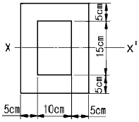
- 16715
- 18645
- 19375
- 23229
(정답률: 27%)
60. 다음 중 가열하면 분자간의 결합력이 약해져서 연해지나, 냉각시키면 결합력이 강해져서 굳는 열가소성 수지에 해당하지 않는 것은?
- 폴리염화비닐
- 폴리에스테르
- 폴리아미드
- 페놀수지
(정답률: 54%)
4과목: 전기제어공학
61. 발전기의 단자전압을 200V로 일정하게 유지하기 위하여 전압계를 보면서 계자저항을 조정하여 계자전류를 조정한다. 다음 중 잘못 짝지어진 것은?
- 목표값 -200V
- 조작량 -계자전류
- 제어량 -계자저항
- 제어대상 -발전기
(정답률: 48%)
62. 서보전동기에 필요한 특징을 설명한 것으로 옳지 않은 것은?
- 정ㆍ역회전이 가능하여야 한다.
- 직류용은 없고 교류용만 있다.
- 저속이며, 거침없는 운전이 가능하여야 한다.
- 급가속, 급감속이 용이하여야 한다.
(정답률: 63%)
63. 그림과 같은 블럭선도에서 C(s)는? (단, G1=5, G2=2, H=0.1, R(s)=1이다.)
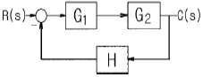
- 0
- 1
- 5
- ∞
(정답률: 43%)
64. 플레밍의 왼손법칙에 따르는 것은?
- 전동기
- 발전기
- 정류기
- 용접기
(정답률: 63%)
65. 캘빈 더블 브리지로 측정하는데 적당한 것은?
- 전동기의 절연저항
- 대형 전구의 저항
- 굵고 짧은 전선의 저항
- 전지의 내부저항
(정답률: 49%)
66. 시퀀스회로에서 a접점에 대한 설명으로 옳은 것은?
- 수동으로 리셋트 할 수 있는 접점이다.
- 눌름버튼스위치의 접점이 붙어있는 상태를 말한다.
- 두 접점이 상호 인터록이 되는 접점을 말한다.
- 전원을투입하지 않았을 때떨어져 있는 접점이다.
(정답률: 59%)
67. 다음과 같은 전동력 응용기계에서 GD2 의 값이 작은 것에 이용될 수 있는 것으로서 가장 바람직한 것은?
- 압연기
- 냉동기
- 송풍기
- 엘리베이터
(정답률: 69%)
68. 저항 100Ω의 전열기에 5A의 전류를 흘렸을 때 소비되는 전력은 몇W인가?
- 500
- 1000
- 1500
- 2500
(정답률: 72%)
69. 전기식 조절기의 장점이 아닌 것은?
- 신호의 전달이 용이하고 지연(lag)이 거의 없다.
- 특성이 선형에 가깝다.
- 많은 종류의 제어에 적용되어 용도가 넓다.
- PＩD동작이 간단히 실현된다.
(정답률: 73%)
70. 열전형 센서에 대한 설명이 아닌 것은?
- 전압 변화용 센서이다.
- 철, 콘스탄탄의 금속을 이용한다.
- 제에벡효과(Seebeck effect)를 이용한다.
- 진동 주파수는
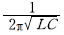
이다.
(정답률: 49%)
71. 그림은 전동기 속도제어의 한 방법이다. 전동기에 가해지는 평균 출력전압의 식은? (단, 전원은사인파 교류로서 V[V], 점호각은 α이며, 전동기는 유도성 부하이다.)
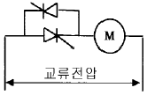
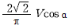
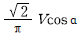
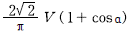
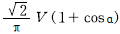
(정답률: 33%)
72. 자동제어계의 응답 중입력과 출력사이의 최대 편차량은?
- 오차
- 오버슈트
- 외란
- 감쇄비
(정답률: 59%)
73. 그림과 같은 R, L, C 병렬 공진회로에 관한 설명으로 옳지 않은 것은?
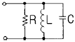
- R이작을수록 선택도 Q가높다.
- 공진시 공진전류는 최소가 된다.
- 공진조건은
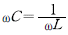
이다. - 공진시 입력 어드미턴스는 매우 작아진다.
(정답률: 55%)
74. ii=Imsinωt인 정현파 교류가 있다. 이 전류보다 90° 앞선 전류를 표시하는 식은?
- Ｉmcosωt
- Ｉmcos(ωt+90°)
- Ｉmsinωt
- Ｉmsin(ωt-90°)
(정답률: 34%)
75. 논리식
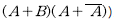
와 등가인 것은?- A
- A+B
- AB
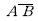
(정답률: 38%)
76. 잔류편차와 사이클링이 없어 널리 사용되는 동작은?
- I동작
- D동작
- P동작
- PI동작
(정답률: 61%)
77. 그림과 같은 회로에서 전류 I는 15A이고 컨 덕턴스 G는 10 , GL 은 8 일 때 GL 에서 소비되는 전력은 몇 W인가?
일 때 GL 에서 소비되는 전력은 몇 W인가?
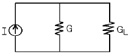
- 3.34
- 5.56
- 7.28
- 9.62
(정답률: 32%)
78. 회전 중인 유도전동기의 3상 단자 중 임의의 2상의 단자를 바꾸어서 제동하는 방법은?
- 발전제동
- 회생제동
- 플러깅
- 직입제동
(정답률: 49%)
79. 폐회로로 구성되어 있으며, 정량적인 제어명령에 의하여 제어하는 방식은?
- 시한제어
- 피드백제어
- 순서제어
- 조건제어
(정답률: 66%)
80. [Vㆍsec]는 무엇을 나타내는 단위인가?
- 자속
- 전압
- 전력
- 전자력
(정답률: 56%)